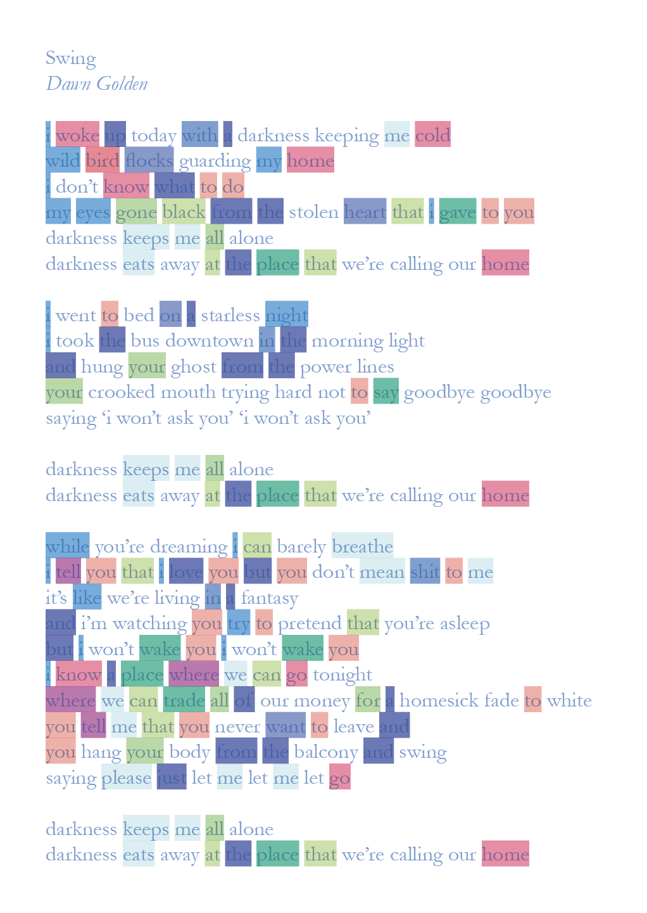
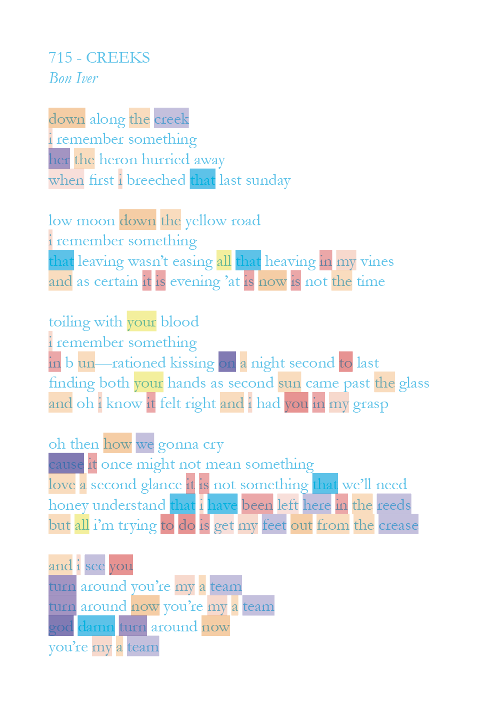
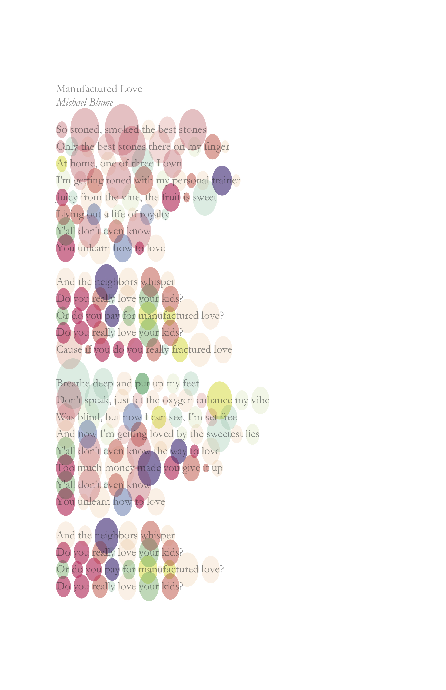
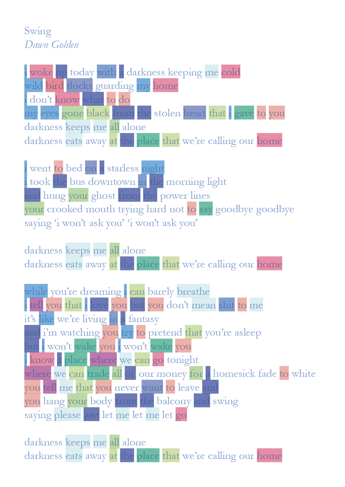
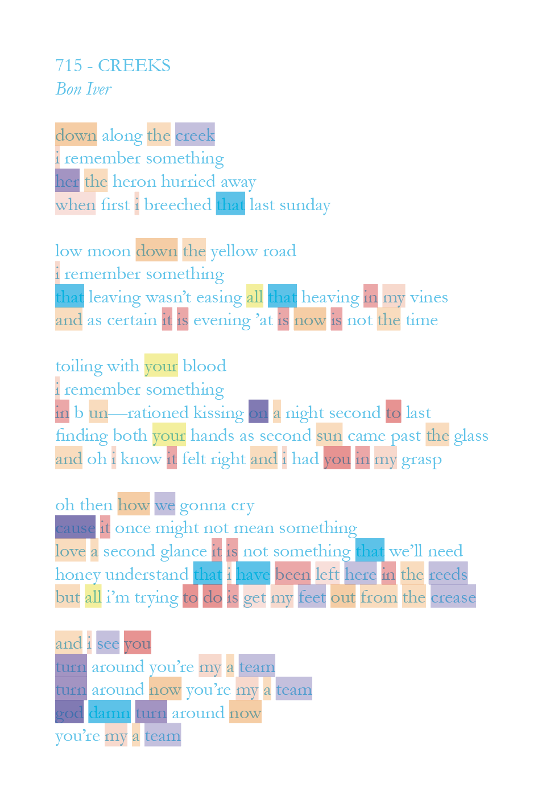
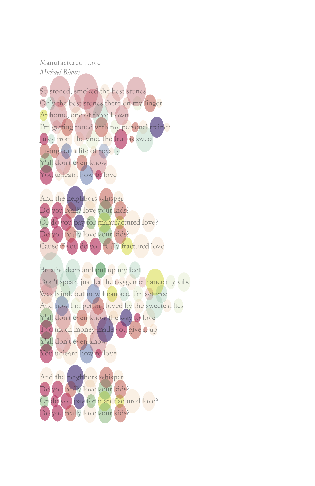
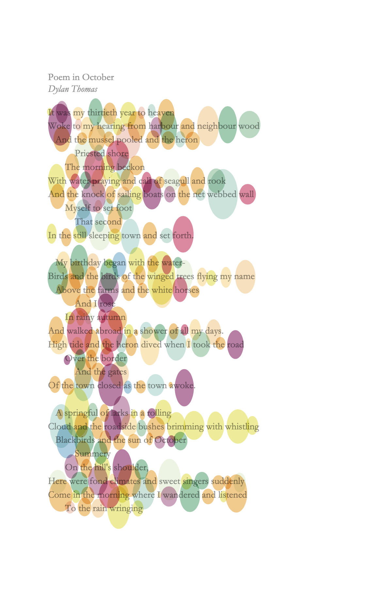
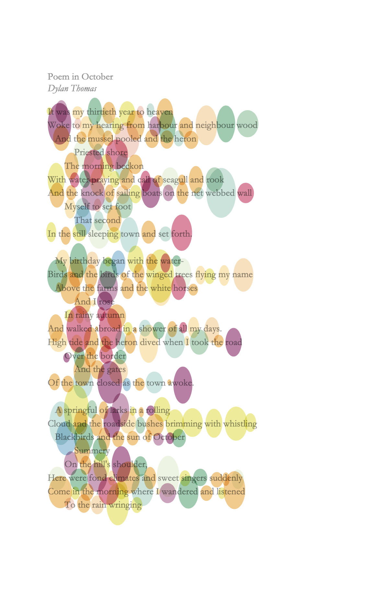

Overview
Poetry is rich in literary elements like rhyme, meter, and alliteration.
Research
Moodboard
I first looked for examples of data vis and abstract structures for inspiration.


Research
Benchmarking
I then looked for existing examples of what I was trying to achieve. Most examples I found simply used color coding to identify rhymes.
right: fan analyzations of rap lyrics and a screencap from Vox's rapping, deconstructed,


Insight
Here, I decided to focus on assonance (or vowel sounds) instead of rhyme, since it reveals more complex patterns.
There are many kinds of rhyme, with "true rhyme" being the best known (eg "see" and "be"). However, similar vowel sounds also create noticeable rhymes. The example from Vox, above, highlights examples of assonance (eg "glass" and "ask").
Research
Surveys
I asked friends and classmates to fill out a worksheet to gather inspiration for possible visual directions, and to see how people with no context of my project would try to interpret assonance and meter.


Prototyping
Sketches
Next, I brainstormed different ways of visualizing assonance by sketching on printouts of one of my favorite poems. Each of these sketches traces occurences of a single vowel sound.


Prototyping
Python
While working on the visual design, I was also starting to build the programmatic side of things. Identifying assonance with Python turned out to be a lot trickier than I expected.* My overall method was something like this:
- import corpus (I was using a small corpus I created of a few favorite songs and poems)
- strip punctuation, tokenize to words, convert to lowercase
- look up pronunciations with the CMU pronouncing dictionary*
- extract vowel phones from pronunciations
- look up syllables of each word with a hyphenation library*
- store syllables and phones into a data file
*The CMU pronouncing dictionary is a literal {dictionary}, so I had to manually find and fix pronounciations of words that weren't included. Additionally, I needed to break words into syllables, but couldn't find any packages for it, so I used a hyphenation package instead. This also resulted in a lot of errors I had to manually fix (hyphenation doesn't break words into their smallest syllables, in order to preserve legibility).

!
After spending a lot of time looking through and trying many methods of parsing meter, I decided to leave it out of my final visualization, since none of the methods I found were accurate enough to add anything meaningful. :(
You can see the output from prosodic, one of the packages I was testing, above—note the inaccuracies in the last line, and on hyphenated words.
Prototyping
Proof of concept
Before moving into basil.js, I tried using Python to generate basil code, to simplify my workflow. I eventually moved away from this because it didn't allow me to easily run for loops in basil, resulting in an excessive amount of code. However, this iteration does serve as a proof of concept that my final idea was achievable in the framework that I was using!
*At this point, I hadn't figured out how to get position data for characters, so all of the spacing between syllables is off.


Prototyping
Javascript
Generating basil code was a bust, so I started coding directly in basil. For some background, basil.js is a javascript framework that runs in Adobe InDesign. I used basil for a few reasons; first, it was required for one of my final projects, and second, through InDesign, I could generate print-ready files that I could use to make posters or a book. My method in basil:
- import corpus
- render text (title/author/body)
- comb through the data file, generating a color for each vowel sound
- referencing the data file, comb through the body, highlighting each syllable with its respective vowel’s color
right: progress shot, errors in red

Refinement
Exploration
It took a while, but I finally got the basil script to work properly! I then started experimenting with different visual approaches. I referenced my earlier sketches, but also tried some new things, including suggestions from my professors.


 





Refinement
Final
In the end, I decided on this approach (I took a lot of inspiration from Lauren Dicioccio's work), because it felt the most dynamic and visually interesting. While it sacrifices some legibility, I felt like this organic approach did the best job of both showcasing the data and creating something that could be admired from a distance.


 

Refinement